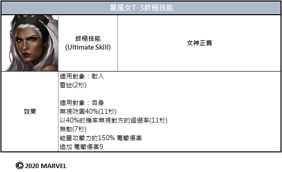

改 版 資 訊
最 新 改 版 消 息
最 新 速 報
活 動
遊 戲 內 容
角 色
挑 戰
神 盾 局
任 務
PVP 模 式
道 具
組 隊 模 式
改版資訊
遊戲內容
改 版 資 訊
最 新 改 版 消 息
最 新 速 報
活 動
遊 戲 內 容
角 色
挑 戰
神 盾 局
任 務
PVP 模 式
道 具
組 隊 模 式
【情報】9月1日(二)更新內容介紹
既是傑出變種人領導人之一，
同時也是可操縱天氣的暴風女加入了異人族 vs X 戰警的戰場！
敬請期待全新制服，與因T-3爆發變種人之力的她，
將在戰場上帶來怎樣強烈的影響！
9月1日下載更新內容後，邂逅煥然一新的暴風女吧！
■ 9月1日(二) 10:00 更新通知
更新適用日期：預定於9月1日(二) 10:00 進行
※更新內容將會依次適用，因此各位特工的適用時間可能會有所不同。
※更新進行中可進行遊戲，但是為了更順暢的遊戲體驗，請重新登入後適用更新。
▣ 新增1種制服
- 技能等級以6等級為基準。
※ 新制服可在9/1(二)更新適用後進行購買，
※ 1種新制服於活動期間以優惠的價格進行販售，
活動結束後也可透過英雄圖鑑及制服室確認與購買新增制服。
▣ 新增暴風女T-3

請期待即將進行的，
對角色成長有幫助的多樣活動！
【情報】8月11日(二)更新內容介紹
MARVEL世界觀的特殊超人類，異人族與變種人在《MARVEL:未來之戰》發生了衝突！
為您介紹不僅包括 [異人族 vs X戰警]，
更以多樣的異人族漫畫為主題進行參考的8月更新。
為了準備戰鬥，請特工確認雙方陣營的戰力！
首先X戰警陣營補充了新人員，
新增了1名新英雄——炫音並開放其潛力!
接下來，異人族陣營中，
新增角色——塞恩！
還準備了2種新制服，開放6名角色潛力，以及異人族國王——黑霹雷T-3！
並且為迎接8月更新，
大幅度強化潛力覺醒角色們的能力值，潛力突破！
追加劇情[世紀戰爭]自選模式並新增獎勵！
等多樣的變化已經被掀起，請參考下方詳細內容。
▣ 新增2名角色
薩諾斯的異人族私生子——塞恩，
最佳變種人POP歌手炫音來到了《MARVEL:未來之戰》！
※新英雄技能以T-2, 技能等級6為基準。
▣ 新增2種制服
異人族已準備好與X戰警的戰鬥了。
為黑霹雷、美杜莎穿上新制服，更出色地完成任務吧！
- 即將追加驚奇女士(卡瑪拉．克汗)與冰人的新面貌，敬請期待！
※新制服的變更技能效果以技能等級6為基準。
※2種新制服在活動期間優惠販售，
活動結束後也可透過英雄圖鑑及制服室確認與購買新增制服。
▣ 新增7名潛力發掘角色
透過8月更新將開放
塞恩，炫音，黑霹雷，卡爾耐克，戈爾工，地獄火，馬克西穆斯共7名角色的潛力。
以上角色可將等級升至70級。
▣ 追加黑霹雷T-3升階
達成70等級的黑霹雷的新成長！
確認一下既是異人族的國王，同時也是宇宙中屈指可數的強者的他的變化吧！
▣ 新增美杜莎潛力覺醒
為美杜莎新增了潛力覺醒！請邂逅新技能~
[美杜莎覺醒技能介紹]
▣ 新增潛力突破
已完成潛力覺醒的角色，可再變強一個階段的方法！
新增潛力突破系統。
[潛力突破條件]
▶英雄裝備強化至+25
▶達成潛力覺醒技能最高等級
滿足潛力突破條件後，如下圖所示，將會顯示特別標識，
持有所有需要的材料時，即可進行。
需要的材料有曼德勒寶石碎片及覺醒水晶，
以上道具可在小隊戰爭中獲得。
[8月更新前追加潛力覺醒角色相關通知]
8月更新後 ~ 下次商店更新前為止，將對下方英雄們進行以下措施。
※日後將會通知正確的時間。
▶對象角色：
青龍，戰虎，玄武，鳳皇，紅骷髏，八爪博士，
魔形女，紅色守衛者，貝塔.雷.比爾，浩克（阿瑪迪斯˙ 趙）
[潛力覺醒技能平衡調整]
-重新調整了對應角色們的覺醒技能。
※技能性能對比8月更新前有所減少，
但透過潛力突破提升能力值後，可擁有更高性能。
[系統變更措施與補償通知]
1.免費進行潛力突破
無需消耗覺醒水晶、曼德勒寶石碎片、金幣，即可進行潛力突破。
2.角色裝備強化+21~+25費用優惠
[商店] > [材料] > [強化材料]中，販售可代替原先裝備強化材料使用的代幣（1金幣）。
3.因系統變更發放的補償
以原先10名潛力覺醒角色裝備等級強化至21~25的特工為對象，
根據相應角色4種裝備的平均強化等級發放補償。
※補償根據角色分別發放（最多10種）
[根據裝備強化狀態的補償]
※計算相應角色的4個裝備的平均等級區間發放。
EX）4種裝備分別處於23、24、24、25等級時，
角色的平均裝備等級為24，可獲得對應的平均超過23等級 ~ 24等級或以下的補償。
※魔形女的情況，將使用鳳凰之羽代替受損的黑暗反物質進行發放。
※發放對象以8月更新維護前的10名角色的裝備強化狀態為基準進行。
※補償將在8月更新維護途中發放，維護結束後可透過收件匣確認。
[潛力突破其他事項]
1.新增完成潛力突破英雄的圖像效果。
2.神盾局學院與成就中新增了潛力突破相關任務。
3.將覺醒技能按鈕調整為與T-3技能圖示相同的位置。
4.潛力突破時，提升指定數值的特工等級，並反映在英雄成長排名。
5.危險室英雄名單上追加了潛力突破英雄。
6.新增了潛力覺醒影片重新觀賞功能。
7.英雄統計畫面中，可確認已完成潛力突破的角色數量。
8.修正了潛力覺醒圖示及覺醒進行畫面的顏色。
9.未開放潛力的變種人角色的T-2圖示顏色從紅色變更為藍色。
▣ 未來通行新賽季進行及改善&新增特殊圖像
更新後，將會開始未來通行第4季。
未來通行中可獲得多樣獎勵與特殊圖像！
好奇未來通行使用方法的特工，請透過以下指南進行確認！
[未來通行獎勵通知]
- 購買未來通行商品後立即適用效果，因此無法進行退費，請參考。
- 請留意開啟的傳說 / 神話未來通行只適用於相應賽季，
賽季結束後無法獲得獎勵，請確認好賽季剩餘期間！
- 神話通行可在購買傳說通行之後進行購買。
- 賽季結束前夕無法購買傳說 / 神話通行，請在遊戲內確認販售時間。
另外，未來通行內追加了新的福利！
購買傳說/神話通行時，對比一般通行可獲得更多的通行點數。
並且，在便利性功能上，追加了未來通行積分通知[開/關]功能。
最後，新增了可代表特工的特殊圖像！
未來通行獎勵2種/還有可在日後開啟的活動商店中見到的1種~
[8月更新新增特殊圖像介紹]
▣ 新增劇情[世紀戰爭]自選模式及獎勵改善
1.追加[世紀戰爭]主題自選模式！
-自選模式是通關征戰模式後，可使用特工的英雄親自享受劇情的模式！
2.自選模式 - 終極難易度中追加了每日獎勵！
每日獎勵是每個關卡每日獲得次數為1次的獎勵，一定機率可獲得劇情碎片。
※滿足指定角色與存活角色加碼全部條件時，
有100%的機率可獲得劇情碎片。
※即使每日獎勵中未獲得劇情碎片，也會消耗每日次數。
[劇情碎片]
過關各關卡時，一定機率可獲得劇情碎片。
劇情碎片以組合構成，收集全部組合可合成碎片。
合成劇情碎片組合時，可獲得特別道具。
[劇情每日獎勵及各劇情碎片寶箱可獲得獎勵]
- 收集並合成各個故事線中的碎片組合時，一定機率登場指定獎勵中的一種。
3.自選模式重覆獎勵中，追加了生體認證獎勵。
4.新增劇情 - 自選模式動畫[開/關]功能。
▣ 新增1種制服收藏
可欣賞8月更新的帥氣制服與新增英雄們。
完成指定的條件後完成收藏時，還將會發放獎勵，請多多使用。
▣ 其他事項
1.改善了購買史詩任務 - 特惠商品時，將會出現確認購買跳窗。
2.亂入次數適用基準變更。
- 原本：以所有內容為對象，適用每日最多亂入次數
- 改善後：適用各關卡最大亂入次數，並顯示剩餘亂入次數
※根據變更事項，重新調整了特定關卡的亂入登場機率，最多亂入次數等。
3.關死侍，禿鷹，地獄火變更為次元任務 - 支援商店專用英雄。
- 變更後部分選擇券等中，可選擇以上英雄，請參考。
4.修正後緋紅女巫[非凡復仇者][全新 全異]角色使用“現實崩塌”技能（終極技能）時，
後方移動距離微弱減少，“混沌統治”技能（主動5號技能）的射程微弱提高，
並可在終極技能使用後，更方便地銜接使用5號技能。
5.改善了增益效果中“貫穿”效果，由於特殊裝備+技能的效果重複時的處理方式。
- 原先：優先適用，首先發動的效果
- 改善：貫穿效果的機率高的一方優先適用，機率相同時，貫穿對象更多的一方優先適用。
比起”30%的機率有無敵貫穿效果“，“80%的機率有貫穿無敵效果”優先適用
ex2.比起”30%的機率有無敵，屏障貫穿效果”，“30%的機率有
無敵，屏障，所有傷害免疫貫穿效果“優先適用。
▣ 修正遊戲錯誤事項
1.修正了入場危險室後，特殊訓練商品非正常顯示，點擊時發生當機的現象。
2.修正了在世界頭目，巨大頭目討伐中，最近使用的角色不顯示在上端的現象。
3.修正了部分特工在確認影域之前賽季的挑戰資訊時，出現無法入場影域的現象。
4.修正了危險室特殊訓練中，沒有可獲得的獎勵時，出現提示的現象。
下次更新也會準備好新的英雄與遊戲內容改善後回來的。